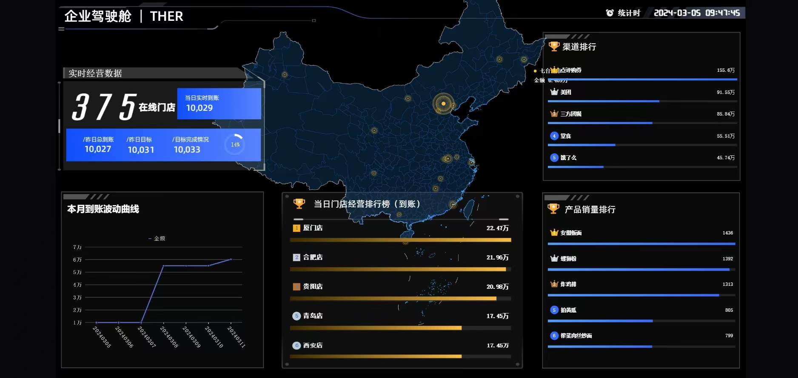
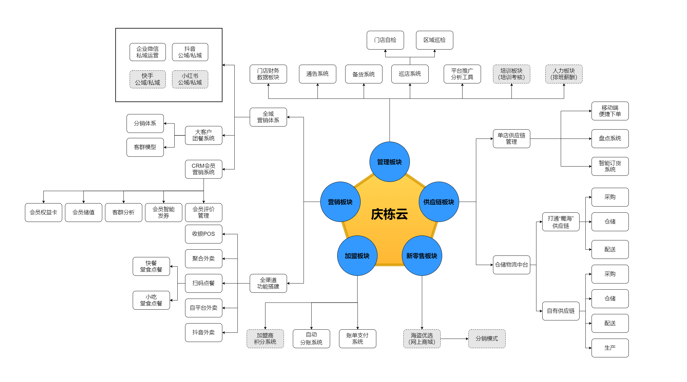
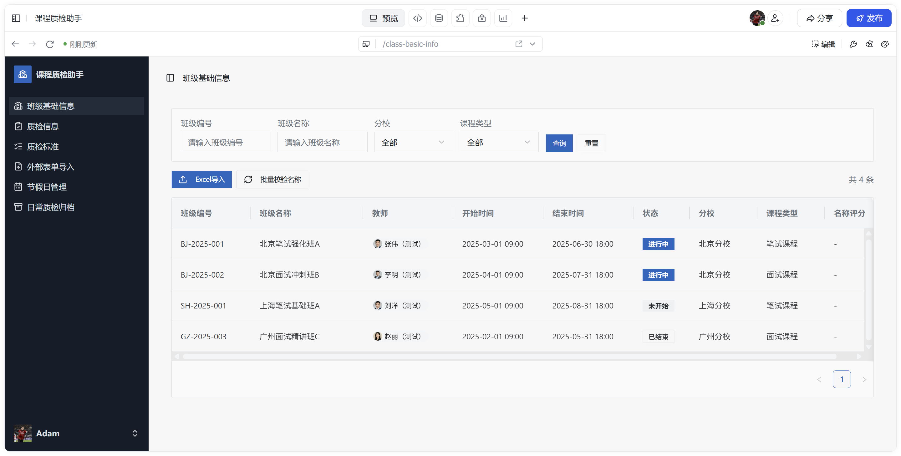
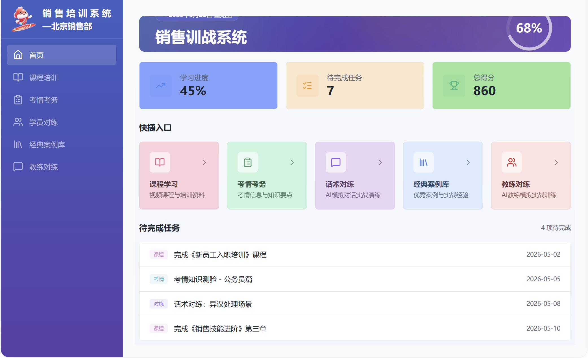
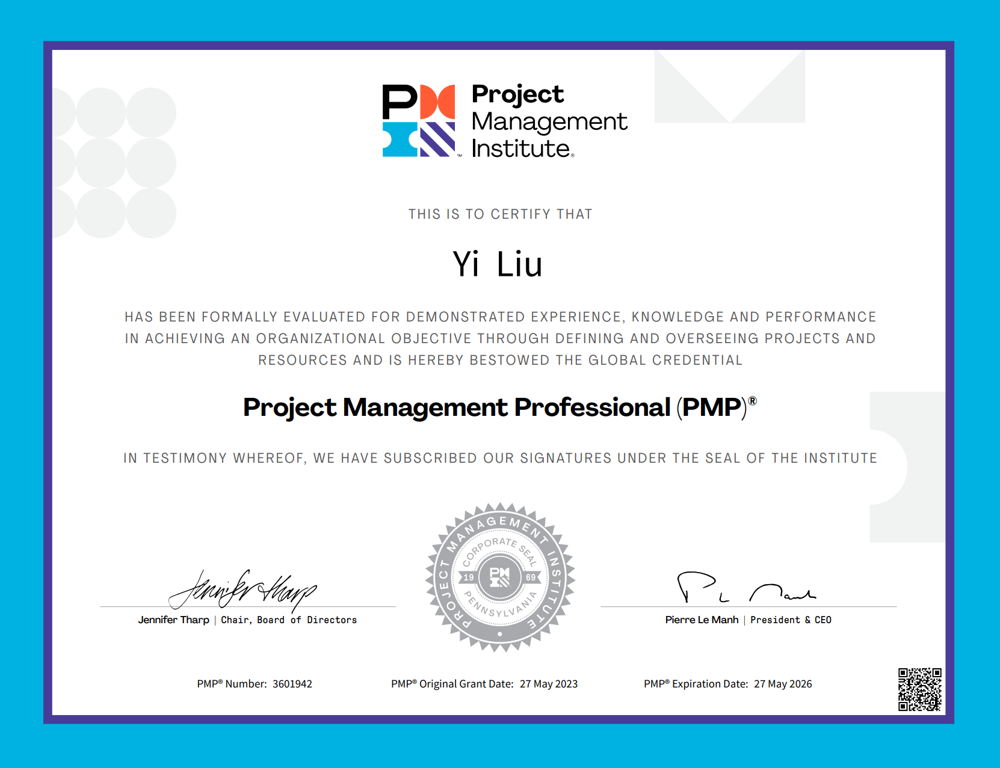
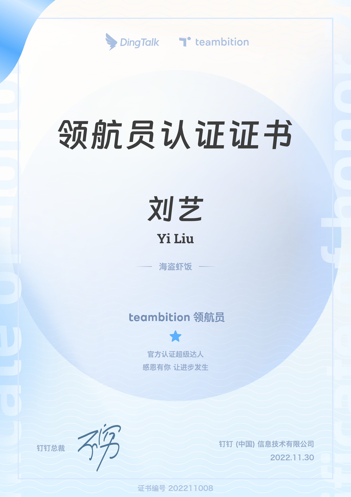

Profile
个人情况
Experience
工作经历
2019.12 - 2021.11
人力资源主管
负责招聘、薪资核算、员工关系等模块，推进师徒制人才培养项目，并参与人力数字化建设。
2021.11 - 2022.05
总经理助理
筹备组织数字化转型工作与新品牌筹建，负责总经办会议跟踪、日常接待、行程安排等事务。
2022.05 - 2024.12
SaaS 产品经理
负责自研 SaaS 系统设计、测试和实施，升级组织数字化转型工作，重构业务流程与数据模型，协助各部门完成增效目标。
2024.12 - 2025.10
客户成功经理
负责 800 万 ARR、120 家客户服务。2025 年 Q2、Q3 季度 NDR 分别位列全国第 1（129%）和第 2（103%）。
Works & Certificates
作品展示与证书






About Me
自我评价
4 年项目管理和产品设计经验，让我具备一定程度的协同、组织能力，以及纠错能力，能够快速修复自身不足。
性格特点
为人诚恳、踏实，性格随和，开朗乐观，能够营造良好的人际关系氛围。
工作风格
工作独立性较强，注重细节，做事认真细致，思路清晰，主次分明。
兴趣爱好
足球、骑行。
持续改进
认识到办事心切、思考问题不够全面等不足，并持续提升全局思考与经验沉淀。